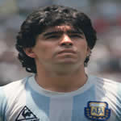

|  |
Arjantin millî futbol takımı teknik direktörü Alfio Basile'in 2008 yılında istifa etmesiyle, boşalan koltuğa, Diego Maradona geçti.
29 Ekim 2008 tarihinde AFA başkanı Julio Grondona, Maradona'nın Aralık 2008'den itibaren teknik direktör olacağını doğruladı. 19 Kasım 2008 tarihinde, Diego Maradona Arjantin teknik direktörlüğündeki ilk maçına Glasgow'da Hampden Park'ta İskoçya karşısında çıktı ve ilk maçını 1-0 kazandı.
Üç maçlık bir galibiyet serisinden sonra Bolivya'ya 6-1 yenilen millî takım en farklı mağlubiyetini egale etti. 2010 FIFA Dünya Kupası elemelerinde son iki maç kala beşinci olan Arjantin'in FIFA Dünya Kupası'na gidememe tehlikesi bulunuyordu. Ama son iki maçta finallere gitmeyi başardılar.
Arjantin'in finallere gitmesi sonrasında maç sonrası basın toplantısında küfürlü dil kullandığı gerekçesiyle FIFA tarafından tüm futbol aktivitelerinden 15 Ocak 2010 tarihine kadar iki aylık bir men cezası aldı. Bunun yanında CHF 25.000 para cezasına çarptırıldı. Evde 15 Aralık'ta Çek Cumhuriyeti ile evde yapılması planlanan hazırlık maçı ceza nedeniyle iptal edildi. Arjantin, Maradona'nın cezası sırasında deplasmanda Katalonya ile yaptığı deplasman maçını 4-2 kaybetti.
Haziran 2010 tarihinde Dünya Kupası finallerine kalan Arjantin ilk maçında Nijerya'yı 1-0 yendi. 4-1 kazandıkları Güney Kore maçında Gonzalo Higuain hat-trick yaptı. Gruptaki son maçını Yunanistan ile yapan Arjantin maçı 2-0 kazanarak gruptan lider çıktı ve ikinci turda Meksika ile eşleşti. Meksika'yı da 3-1 ile geçen Arjantin çeyrek finalde Almanya'ya 4-0 yenildi ve turnuva dışı kaldı. Arjantin turnuvada beşinci oldu. Almanya yenilgisinden sonra Maradona Arjantin teknik direktörlüğü geleceği hakkında "Yarın bırakabilirim" dedi. 15 Temmuz 2010 tarihinde Arjantin Futbol Federasyonu 2014 yazındaki Dünya Kupası'na kadar geçerli olabilecek dört yıllık bir sözleşme teklifi yapabileceğini açıkladı, ancak 27 Temmuz'da AFA sözleşme yenilememe kararı aldı. 29 Temmuz 2010 tarihinde Maradona AFA başkanı Julio Grondona ve millî takımlar direktörü Carlos Bilardo'nun kendisini görevden aldığını söyledi.
|